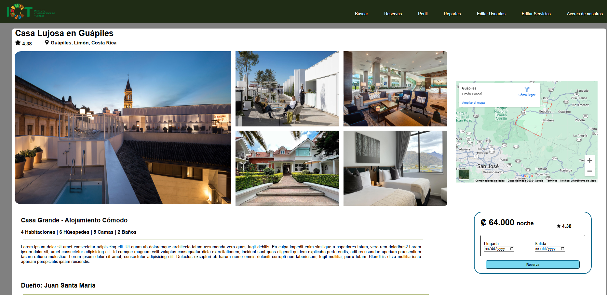
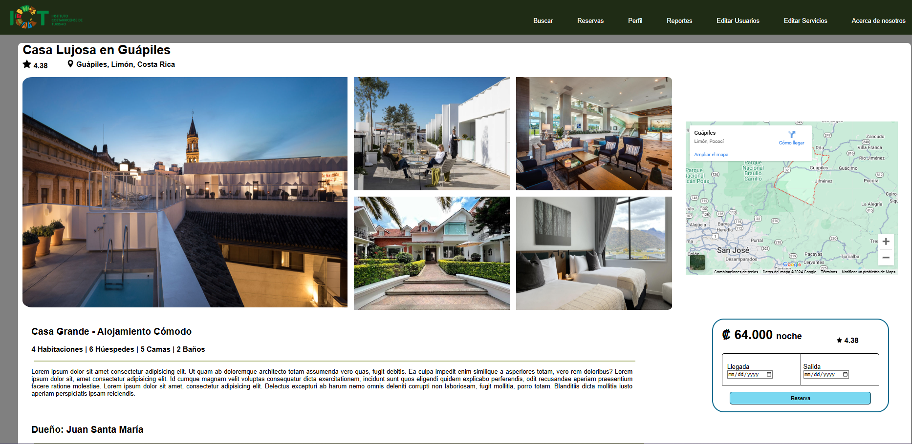

Portafolio
Este proyecto consistió en desarrollar una página web para fomentar el turismo y aumentar los ingresos del Instituto Costarricense de Turismo (ICT) al promover destinos avalados por la institución. La página incluía un sistema de búsqueda y reservas que permitía a los usuarios explorar opciones de hospedaje con descripciones detalladas, fotos, precios y disponibilidad. También ofrecía información completa sobre los lugares, servicios y actividades cercanas. El diseño se enfocó en ser moderno, intuitivo y funcional en dispositivos móviles y computadoras, garantizando una experiencia fluida para los usuarios. Este proyecto no solo buscó atraer más turistas, sino también apoyar el crecimiento económico de las comunidades locales al destacar sus servicios y atractivos turísticos.
 
